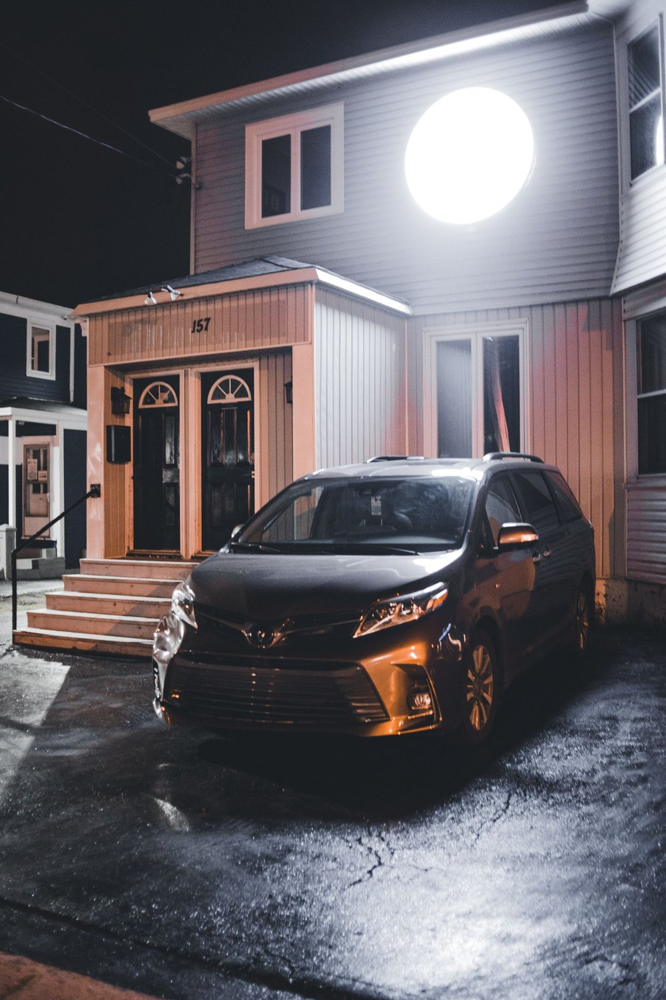

Off the Clock: The Human Behind the Trade
The human behind the trade — the family side, and the things that happen when the work is done.

We leave ours so they can get to theirs.
That line sits with me a lot.
People call a locksmith and they see a guy who shows up, gets them back into their car or their house, and drives off. Problem solved. What they don't see is where he came from before that call, or where he's headed after. They don't see the seat that was empty at his own dinner table so he could get someone else back to theirs.
I want to pull the curtain back a little. Not to complain — I love this work — but because I think most people have no idea what this trade actually asks of the people in it, and I think the people in it deserve to be seen.
The hours don't keep normal time. A lockout doesn't care that it's dinnertime. It happens at 2 a.m. in a parking lot, at 6 a.m. before the sun's up, on a Sunday when everyone else is home with their families. When you're the person people call in their worst moment — stranded, locked out, a kid crying in a car seat — you go. That's the job. So the van is in and out of the driveway all night. Some nights I'm gone before my kids wake up and back long after they're asleep.
The missed meals add up. Missed dinners. Missed breakfasts. The plate someone kept warm that went cold. My wife has held our family together through a lot of quiet evenings where my chair was empty — because somewhere across town, a mom couldn't get to her own kid in a locked car, and I was the one who could.
And here's the part that gets me most. Some days, an hour is what you get. One hour with your kids before they fall asleep, or before you head back out into the dark. You learn to make that hour count. You learn that being fully there for sixty minutes beats being half-there for an evening.
But here's the thing I've made peace with, and it's why that tagline means so much to me:
Every night I leave my family, it's so another family can get back to theirs. The person locked out of their house at midnight. The nurse stranded in a hospital parking lot after a double shift. The dad who locked his keys and his baby in the running car. When I pull up, they get to go home. They get to get to their people. And the reason I can do that — the reason I'm willing to trade my dinner table for theirs — is the family waiting for me when I finally park the van.
I've got an amazing wife and three wonderful kids — two daughters and a son. They don't always get my time. But they've always, always got my why. Every late night, every cold dinner, every quick hug goodnight through a car window — it's all so they have a stable roof, a full fridge, and a dad who's building something worth building.
So when the van's finally parked and the phone's quiet, I try to be all the way home. Present for more than an hour. At a table where the seat is finally full.
To the other locksmiths reading this: I know you get it. I know you've lived the 2 a.m. calls and the cold plates and the goodnight hug through a cracked car window. This trade is full of people quietly holding their families together while they help strangers in the dark — and nobody ever writes about you.
So we're starting a place for that.
If you're a locksmith and you want to share your story — the hard nights, the family sacrifices, the strange calls, the moments that made it all worth it, the funny ones too (it's not all heavy) — email us at turbokeysmith@gmail.com with the subject line "Off the Clock" so we can find it. We want to tell these stories. The people behind the trade deserve to be seen, and sometimes you just need a place to set it down.
✉ Share your story — "Off the Clock"We leave ours so they can get to theirs. Let's talk about what that really costs — and what makes it worth it.
— The Key Man